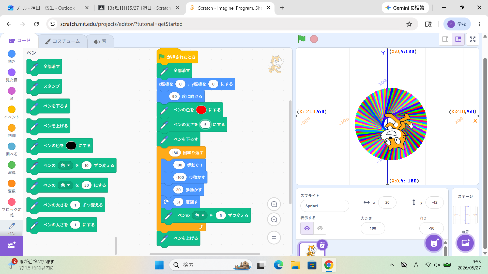
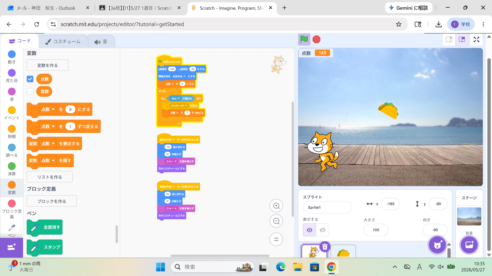

1週目のレポート ： 公大高専１年実習I-1
3a班16番 神田桜生
第1週目
1-1 サイエンスアート

1.内容
scratchの基本的な使い方とプログラミングの基本を学んだ。具体的には拡張機能であるpenを使い、幾何学的な模様を描いた。
また形状だけでなく、ペンの色や太さなども変更して試行錯誤しながら実習を行った。
2.感想
scratchはもともとよく使って遊んでいたのだが、久しぶりに触ると改めて本当によくできたビジュアル言語だなと感じさせられた。
また、サイエンスアートでは工夫しがいがあり、単純ながらもとても楽しめた。
1-2 ゲーム

1.内容
scratchを用いて、簡単なゲームを作成した。内容としては、降ってくるタコスを猫が十字キーの左右ボタンで動きキャッチして得点を増やすというものである。
また、落ちてくる場所や落ちてくる速さに乱数を用いて飽きを起こさないようにした。
2.感想
ゲーム制作の楽しさを感じることができる良い授業だと感じた。また、操作性やゲーム性を改造する楽しさも知ることができ、とても楽しく、勉強になった。
ジャンプを追加するという学習も、変数の使い方を学ぶことができてとても有用だと感じている。
1-3 ホームページ作成
私のホームページ
1.内容
GitHubを用いて自身のホームページを作成する。また、それらの学習を通してGitHubの使い方やHTMLの基本について学ぶ。
そしてレポートの書き方の基本を知り、今後の提出課題に活かす。
2.感想
GitHubは存在だけ知っていて、全く使ったことがなく何ができるのかもわからなかったが、この授業で使い方を少し知ることができた。
これからも使っていきたいので、ちょっとずつ練習していきたい。
各ページへのリンク
1週目のレポート
2週目のレポート
3週目のレポート
私のホームページ